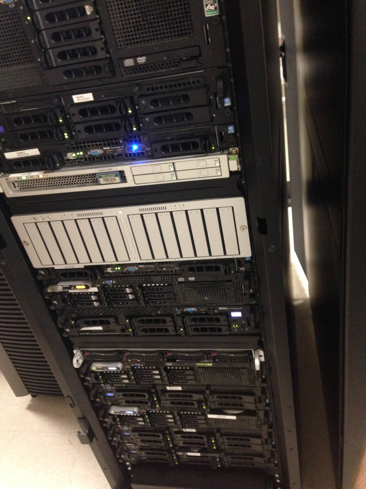

Matrix, the Center for Digital Humanities and Social Sciences at Michigan State University, is devoted to the application of new technologies for teaching, research, and outreach. As one of the premier humanities computing centers in the United States, Matrix creates and maintains online resources, provides training in computing and new teaching technologies, and creates forums for the exchange of ideas and expertise in the field. Matrix is the hosting platform many popular digital humanity repository and reservation systems. I wanted to explore what powers these systems to continue being functional day in and day out, and what exactly keeps them live. Let's take a look behind the scenes.
I was able to meet up with Zak Schlemmer, the Systems Architect of Matrix, who was able to briefly explain the technology stack that keeps Matrix alive and well. He showed me into a small, incredibly loud room that was filled with 40 physical servers split into two racks, 3 air conditions and a backup battery as tall as I am. Along with the physical servers, are 4 virtual parent machines that run 25 virtual servers each, which split up different applications and duties. For example, one of the physical servers, titled Kraid, after the Nintendo character, can run and control up to 10 other virtual servers. This is done using a technology called XEN.
 One of the two server stacks featured at Matrix.Zak continued to explain that Matrix has a physical dev Apache, and a physical dev database server (named Peach, and Rush, also after the Nintendo characters). I was then told that all of the servers at Matrix, are named after Nintendo characters.
Two disc farms are in existence, Ken and Irene, that are mirrored, and connected to the rest of the apache physical servers, so that if one has a problem, the other one can take over through this technology called Heartbeat. "Ken and Irene are constantly syncing with each other. If ken is the active disc farm, then Irene is actively syncing the various changes that happen on Ken, and if Heartbeat detects there is problem with Ken, or it's not responding, Heartbeat will switch the active disc farm over to Irene," Zak explained. Many other paired servers will use Heartbeat in the same way, for example the servers named Chomp and Thwomp. Chomp and Thwomp use a technology called HAProxy, which "handles load distribution for live Apache."
There is also Mario and Luigi, both physical servers running Apache, along with Firesnake, Drybones, and Boo, which are all virtual servers also running Apache that all come in on a .29 IP address. This IP address is the address that all matrix sites resolve to, which is also the address for Chomp or Thwomp. Chomp and Thwomp, then take that connection, conduct a "Round Robin, which means, going down a list over and over," and send the connections to all the various Apache servers on the list.
Two other servers (Link and Zelda) use a technology called LDAP, similar to Heartbeat, and are in control of all the authentication services across Matrix's systems. "If Link is down, Zelda takes over, and vice versa".
Another physical server, which Zak referred to as the FAI Host, allows Zak through the technology called CFEngine Config Push System, to do a PXE boot which tells the FAI Host, to boot from a previous config file in order to backup or revert to to old server systems. "Say I have a virtual machine die, I can just rebuild it, and the FAI Host knows exactly how to rebuild the virtual machine," Zak explained, "The FAI Host is independent from the rest of the servers, but controls and manages how all of the other servers are built." The FAI Host also allows Zak to make a change across many servers all at once, instead of changing each server individually.
After having felt like everything Zak explained to me went right over my head, we left the server room to talk more about the servers within Zak's office and in order to get away from the noisy server room. "The entire system of servers work as a whole. All of the servers you just saw, they all work together to run any single web page that we host."
"The entire system of servers work as a whole. All of the servers you just saw, they all work together to run any single web page that we host."
Zak then began explaining to me the server, "MegaMan", AKA Zak's favorite server. MegaMan is Matrix's newest Database server. MegaMan has a whopping 128 gb of ram, and 8 Intel Xeon cpu v2 at 2.5 ghz processors. Zak went on to explain that each server has completely different specs, but spoke specifically on how the Mario server is better than the Luigi server. The Luigi server had crashed the day previously, but Zak was able to restore the Luigi using the CFEngine Config Push System and was able to rebuild it from scratch.
With technologies such as Heartbeat, XEN, HAPROXY, LDAP, the CFEngine Config Push System and many others, Zak is able to manage the servers of Matrix, keeping them live day in and out, restoring crashed servers, and making sure everything at the company is running smoothly. Zak is a crucial component to the team at Matrix, as without him, Matrix would be nothing.